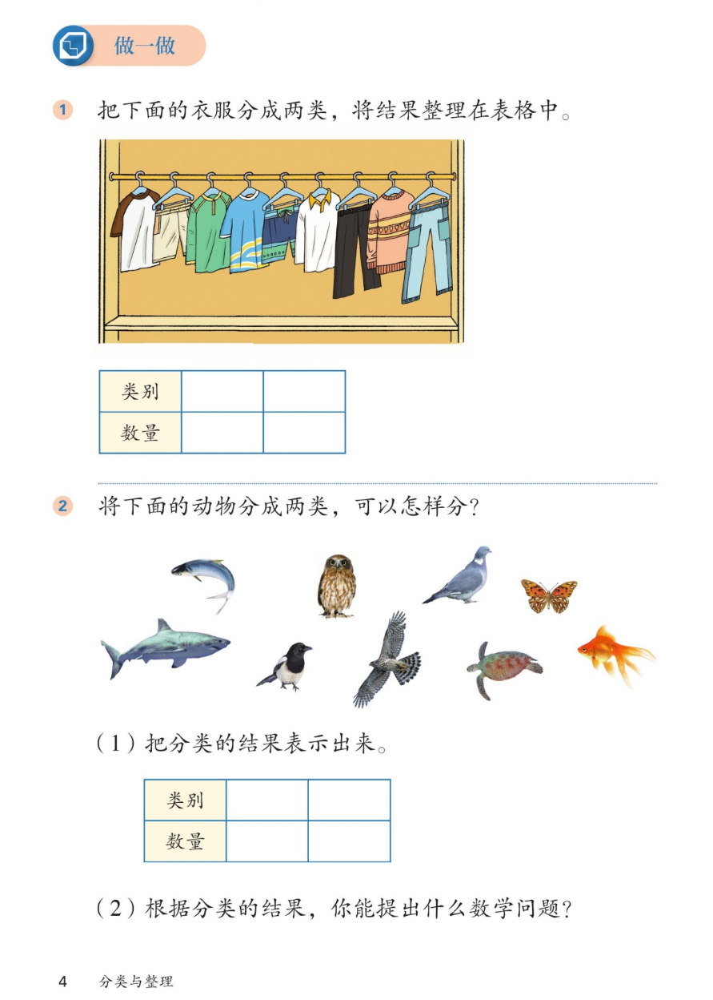

🧺 分类与整理 · 课本第 4 页 · 做一做（衣服与动物分类）
人教版《数学》二年级上册 · 有声图文带读 · 先想后看解析
题数
6
认知
2
强化
3
拓展
1
🎧 分两步学：
① 解析教材图片
——纯声音读图，读到哪一块哪一块闪动提示；关键处先倒计时让你思考，再在图片下方给出解析并朗读。
② 分层提问练习
——六道分层题（认知 / 强化 / 拓展），先思考再展开解析、朗读参考答案；这一步不再回到图片。
也可以随时点任意一句话、图上任意一块单独听；点课本文字卡还会展开答案。
教材图片（点块听读，读到哪块哪块闪）

📖 人教版《数学》二年级上册 · 课本第 4 页 · 图片仅供个人学习，版权归人民教育出版社所有
🤔 想一想（点我可跳过）
课本的文字（点句子：听读 + 看答案）
做一做①
把下面的衣服分成两类，将结果整理在表格中。
看答案 ▾
参考答案（按穿着部位分）：
上衣
5
件，裤子
4
条，一共
9
件。表格里：类别写「上衣 / 裤子」，数量写「5 / 4」。
分法不唯一（也可按颜色等），但一次分类只能用同一个标准。
做一做②
将下面的动物分成两类，可以怎样分？
看答案 ▾
分法不唯一（多解）：
① 按
会不会飞
分：会飞的 5 只（猫头鹰、鸽子、蝴蝶、喜鹊、老鹰），不会飞的 4 只（小鱼、鲨鱼、金鱼、海龟）；
② 按
生活环境
分：生活在水里的 4 只（小鱼、鲨鱼、金鱼、海龟），不生活在水里的 5 只。
记住：一次分类只能用同一个标准。
问题
(1) 把分类的结果表示出来。
看答案 ▾
表示方法（多解，选一种即可）：
列成表格（会飞的 5 / 不会飞的 4）；或画象形图，一类一行圆圈，数到几涂几个；或画「正」字计数。数量都是
5
和
4
。
问题
(2) 根据分类的结果，你能提出什么数学问题？
看答案 ▾
参考答案一：
会飞的比不会飞的多几只？5 − 4 = 1（只），多 1 只。
参考答案二：
一共有多少只动物？5 + 4 = 9（只）。
能用分类结果提出问题并解答都对。
分层提问练习（先想后看解析）
👕
认知
衣服分成两类，可以怎样分？每类各有多少件？
看解析
🤔 想一想
解析（分法不唯一）：
最常用的标准
：按穿着部位分——上身穿的 / 下身穿的
数好了
：上衣
5
件、裤子
4
条，一共
9
件
也可以按颜色、长短分，只要标准统一就对
📋
强化
结果整理进表格，怎么填才能一眼看懂？
看解析
🤔 想一想
解析：
类别
一行：写两类名称「上衣」「裤子」
数量
一行：对应写
5
和
4
，上下对齐
检查：5 + 4 = 9，和衣服总数一样，说明没数漏
💡 两类数量加起来 = 总数，是自查的好办法
🦅
认知
动物分成两类，可以怎样分？（不唯一）
看解析
🤔 想一想
解析（标准不唯一）：
标准一 · 会不会飞：
会飞的 5 只（猫头鹰、鸽子、蝴蝶、喜鹊、老鹰）；不会飞的 4 只（小鱼、鲨鱼、金鱼、海龟）
标准二 · 生活环境：
水里的 4 只（小鱼、鲨鱼、金鱼、海龟）；不在水里的 5 只
🌈 标准不同，分法不同；
一次只用一个标准
📊
强化
(1) 怎样把分类的结果表示出来？
看解析
🤔 想一想
解析（表示法多解）：
列成表格：
类别写「会飞的 / 不会飞的」，数量写 5 和 4。
象形图：
一类一行圆圈，数到几个涂几个。
画「正」字：
数一只画一笔，一个「正」字正好 5。
⚖️
强化
会飞的比不会飞的多几只？怎么算？
看解析
🤔 想一想
解析：
第一步
：看分类结果——会飞的
5
只，不会飞的
4
只
第二步
：5 − 4 = 1（只），
多 1 只
直观法
：在象形图上对齐比长短，长出来的部分就是多的 1 只
🚀
拓展
(2) 根据分类的结果，你还能提出什么数学问题？
看解析
🤔 想一想
解析（开放题）：
参考答案一：
一共有多少只动物？5 + 4 = 9（只）。
参考答案二：
不会飞的比会飞的少几只？5 − 4 = 1（只），少 1 只。
🌈 能用分类结果提出问题、并解答正确，都算对
① 解析教材图片
② 分层提问练习
⏹ 停止
纯声音 + 高亮跟随 · 想好才出解析
← 返回导航